Published: 2023-05-26
Source link: https://www.cnphotos.net/academy/show-141.html
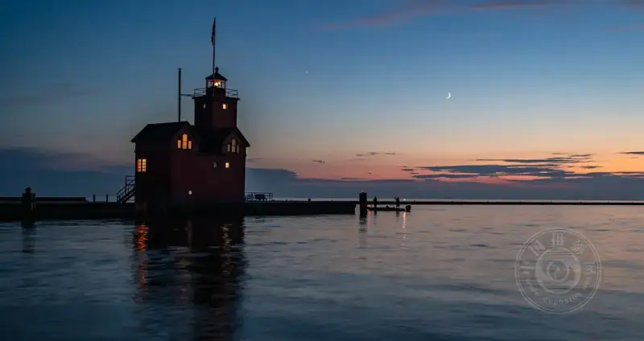
©Jenn Mishra
Low-light photography means shooting in any situation where light is limited. The sun is a bright natural source. Whenever the sunlight is blocked, we face a lack of light.
Photography is painting with light, and dim light does not mean no light. At night, the moon gives light, or we use lamps, so there is always at least some light to use.
We often face low light indoors. We may not notice how dim it is, because our eyes adapt to low light. But the camera does not adjust by itself. You may see, but your camera does not, so you must change some settings to shoot.
Here are five low-light tips so you can keep shooting even when the light fades.
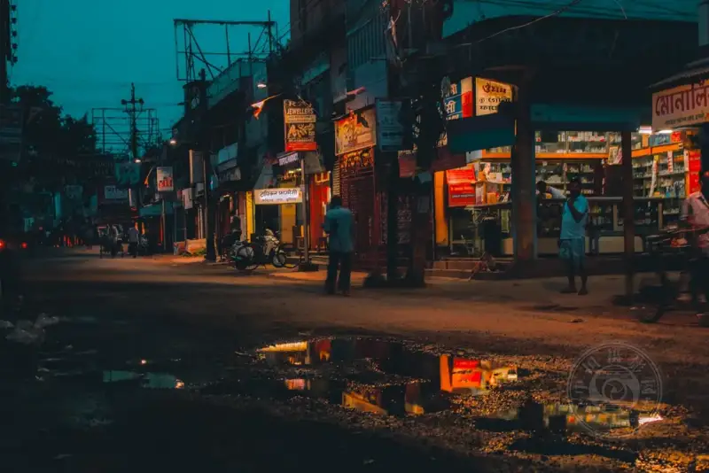
©Rudra Chakraborty
1. Widen the aperture
We can see in a dim room and find our way in moonlight, because our eyes adapt. The pupils widen to let in more light, and narrow when the light is bright.
The aperture, or opening, on a camera lens is a bit like our pupil. You widen it to let in more light, or narrow it to limit light. The size of the opening is given by the f-number. A low f-number means a wider opening, so f/2.8 is wider than f/8.0. Every lens has a maximum opening. A fast lens can open to f/2.8, f/1.8, or even f/1.4. Sports, wildlife, and concert photographers often use wide-aperture lenses. They open the aperture wide to let in as much light as possible.
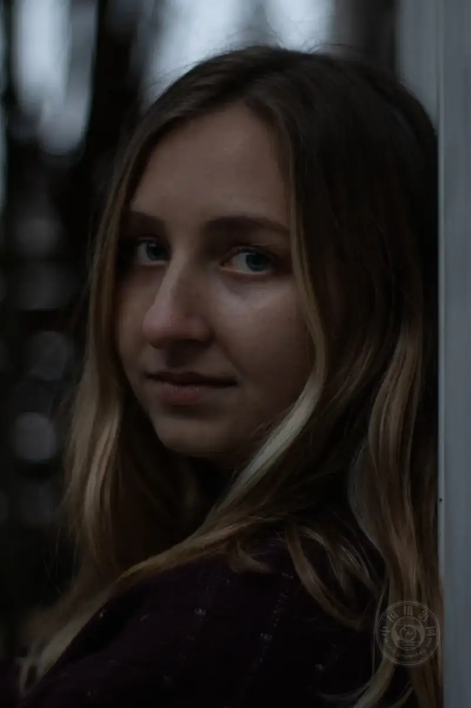
©Spencer Quast
When you find yourself in low light, open the aperture. Do this in manual or aperture-priority mode. Aperture priority is usually marked A or Av. Set the aperture there, and the camera works out the shutter speed for a correct exposure.
Opening the aperture lets you shoot in dim light, and it also changes the depth of field. At a fully open aperture, the focus is sometimes not exact, so make sure you lock the focus on your subject.
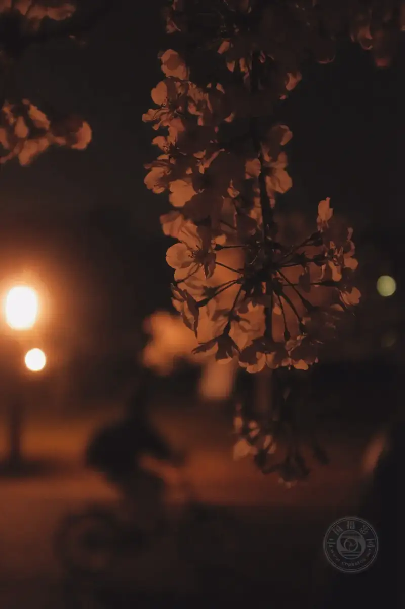
©Mak
2. Raise the ISO
The ISO setting is how sensitive the camera sensor is to light. In dim light, a higher ISO makes the camera use more of the available light.
The default ISO on most cameras is 100, which gives the cleanest image. But in low light you need a higher ISO. To learn how to change it, check the camera manual. It is usually set with a menu button or a dial.
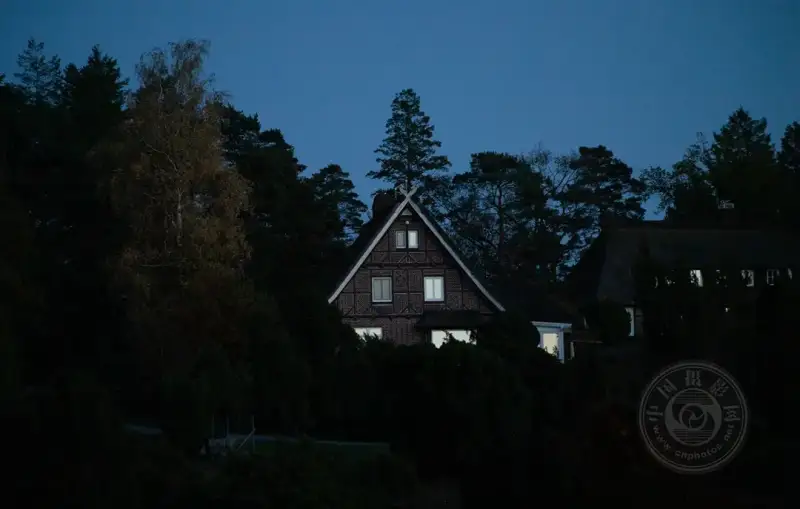
©Fernando Galvis
Most mid- to high-end cameras top out above ISO 12,800. A higher ISO makes a brighter image, but it adds noise and grain. Each generation of digital camera makes cleaner images at higher ISO, so do not worry about a little noise. A noisy photo is better than no photo.
Even if your image is a little grainy, editors such as Lightroom can reduce noise. Or you can keep the noise. It adds texture, especially to black-and-white images.
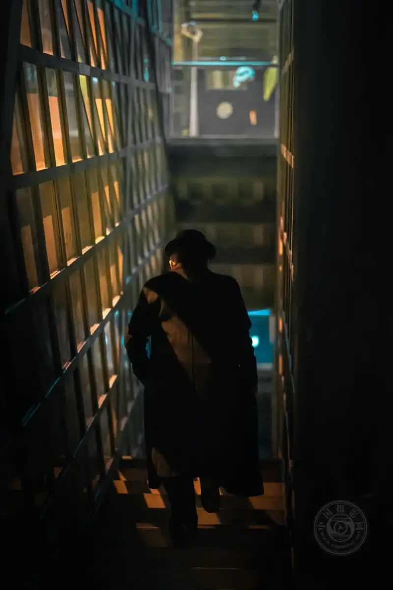
©Julio Lopez
3. Slow the shutter speed
You control how long the shutter stays open. While it is open, the sensor gathers light, and the light adds up to brighten the image. In dim conditions, slowing the shutter a little, to half a second or one second, is often enough to catch the light in a dark room. At night you may need a longer open time. Astro photographers often hold the shutter open for 20 to 30 seconds to capture starlight.
When you are in low light, slow the shutter. Do this in manual or shutter-priority mode. Shutter priority is marked S or Tv, depending on your camera. In this mode, you set how long the shutter stays open, and the camera works out the aperture for a correct exposure.
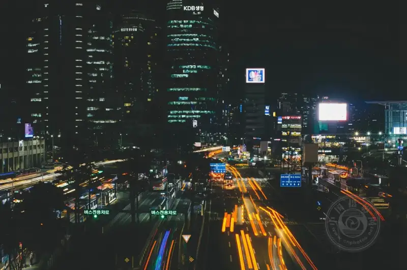
©Bundo Kim
With a long exposure, watch for one thing: camera shake. Any movement while you hold the camera shows as blur. We all shake a little, but it only shows when we lengthen the shutter. So when you open the shutter to gather more light, set the camera on a tripod or a steady surface.
Also, any movement in the scene shows as motion blur. This can be a pleasing effect, and photographers use it when shooting flowing water or fireworks. People moving at night may blur too, which is not always bad and may give an interesting result.
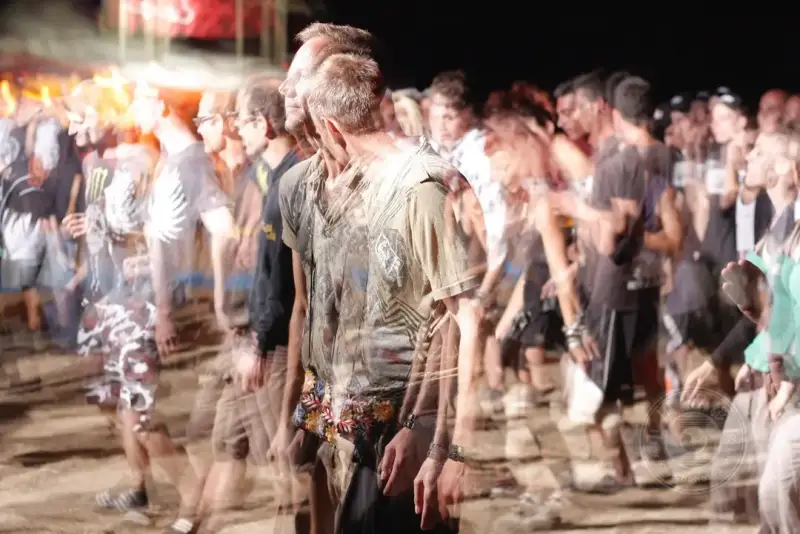
©Goashape
4. Add an external light to the scene
In low light, you can use all kinds of external light to add light to the scene. This gives your image a good exposure and adds interesting shadows as a photographic element.
First use the light already in the scene. If you shoot a street at night, look for street lamps or glowing signs. At night, the moonlight can be surprising.
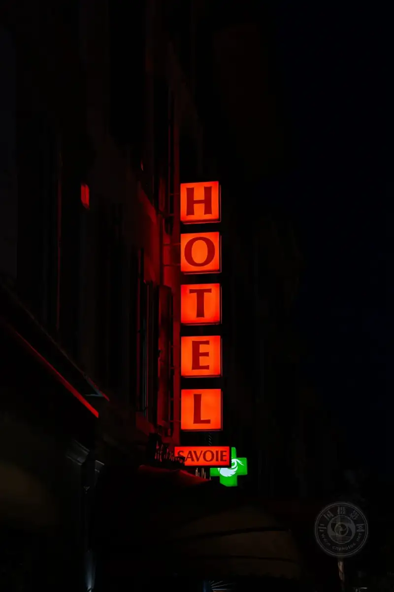
©Tim Bernhard
You can also add light with the flash on your camera or phone. A flash adds light, but you may not control its direction and amount. The best light usually comes from the side, not the front. A camera flash often makes a photo look unnatural, so portrait photographers use external light held away from the camera. A flash also has a limited range and cannot reach distant objects.
A flash is not the only external source. You can use any light to illuminate the scene.
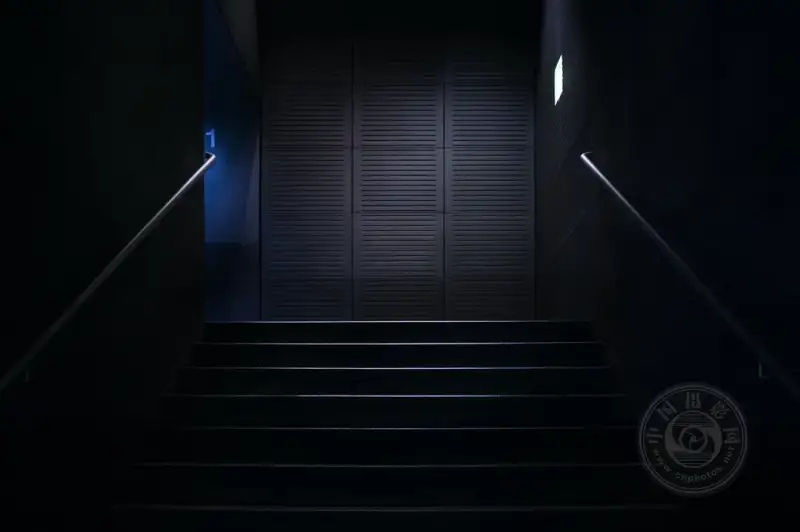
©Atanas Teodosiev
Learning to control external light takes many factors and much practice.
Light reflects. You can aim the light at a flat surface, such as a ceiling or a wall, and the light bounces and spreads. The direction matters too. If the light is behind your subject, you get a silhouette. If it is from the side, you see shadows, which adds depth to the subject. Light from the front is flat and usually the least flattering.
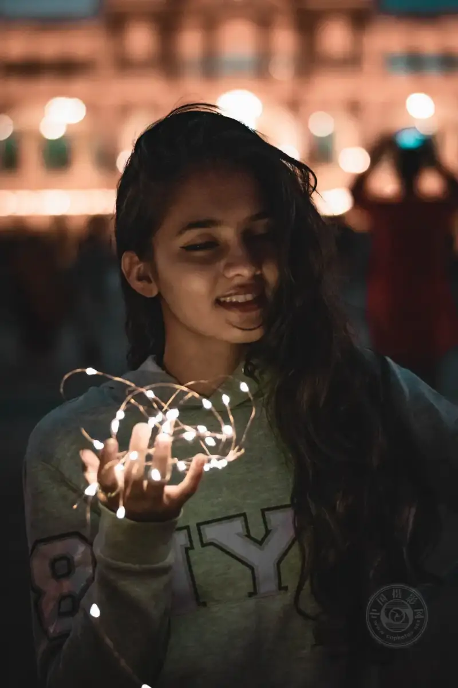
©Arun Prakash
5. Embrace the dark
Not every photo needs a full exposure. In a dim setting, focus on the available light and let everything else go black. This is low-key photography. It stresses darkness and shadow and usually sets a mysterious, dramatic mood.
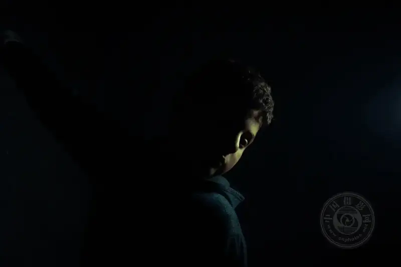
©FETHI BOUHAOUCHINE
Also, a dark-looking image is not really dark. Your camera may have captured more light than you think. When you edit in Lightroom and lift the exposure and the shadows, you may be surprised.